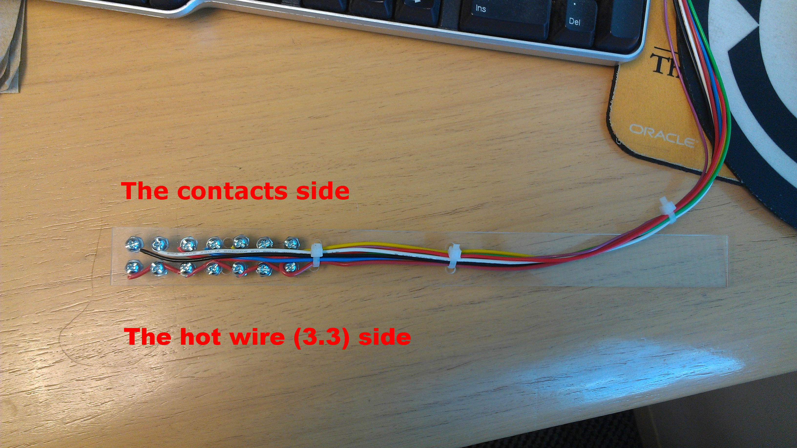
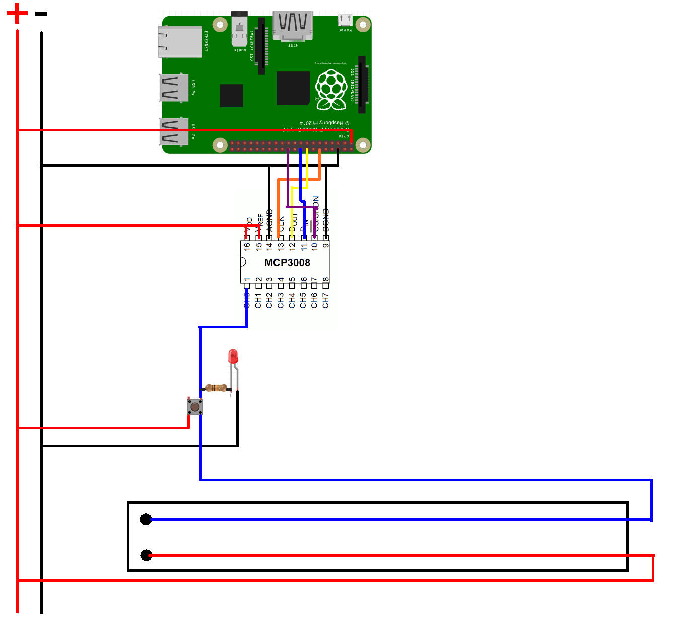
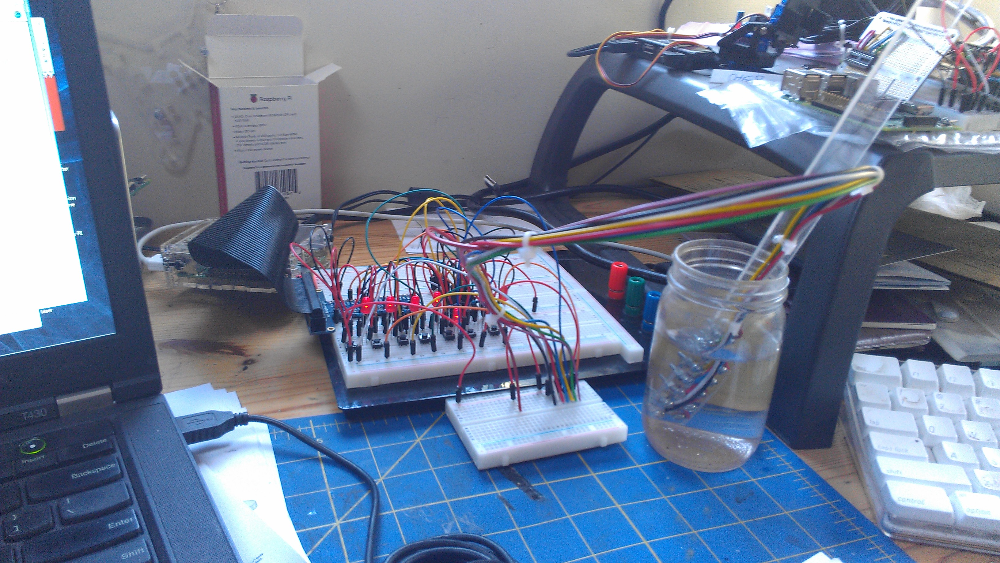

Level Detector
The goal here is to detect the water level in a given place (a cup, a bucket, a basement, etc).
We have two distinct parts:
- The probe
- The components on the Raspberry PI's side
The probe is the device that will detect the water level.
We will use the fact that the water conducts electricity.
The probe will essentially be made of a serie of several contacts, switched on when the water level is rising.
Those contacts will then feed an MCP3008 (Analog to Digital Converter - ADC) on the Raspberry PI side,
and the software will read those data.
The MCP3008 is a 10-bit ADC (can take 210 values, which is 1024), that can read up to 8 channels. We will associate each switch on the probe with one of those channels on the MCP3008.
The probe

Notice on the hot wire side, there is a screw facing each contact. This is to avoid connectivity problems.
When the water raises, a contact is established between a pair of screws, and this contact is reflected at the MPC3008 level.
Wiring

For clarity, we represent here only one of the probe's switches. On the previous picture, we have seven of them.
Notice the push button, it is here for tests. When the user pushes the button, the led goes on (there is a 10kΩ resistor to protect it), and the value read on the MCP3008 goes up to 1023.
On the diagram above, if you follow the blue wire connected on the probe, see it goes all the way to the 'CH0' pin of the MCP3008.
Here is the full prototype:

Oliv did it